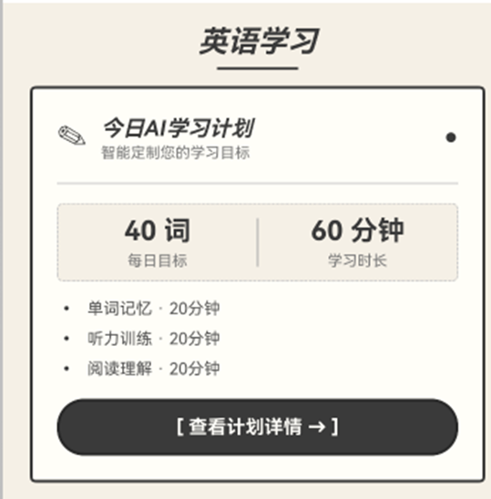
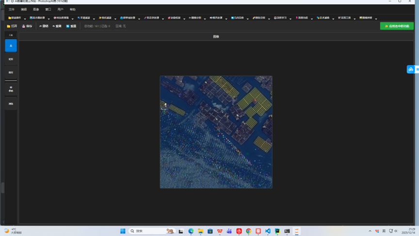
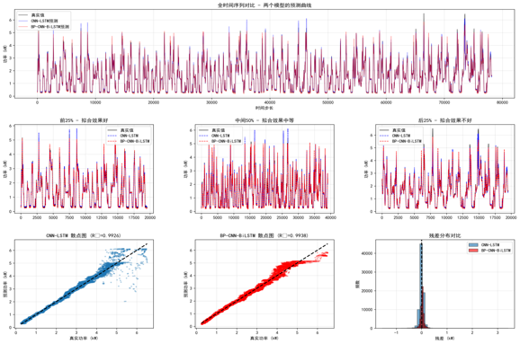
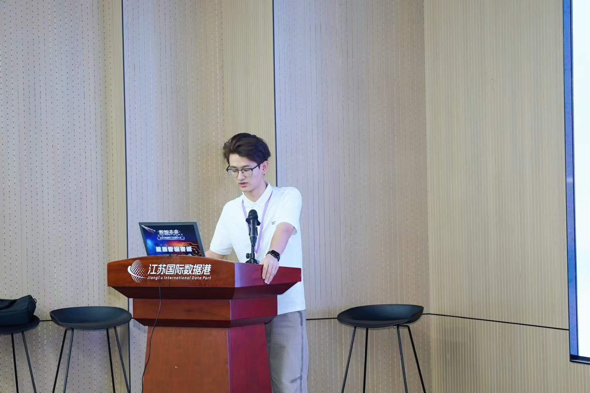
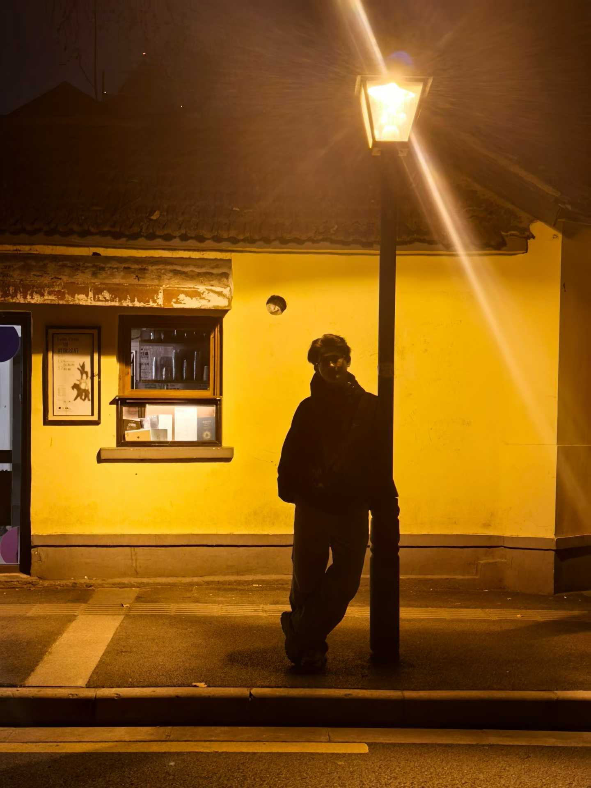

Home page
马建军
2篇
论文 (1 EI / 1 SCI)
2项
发明专利 (实审)
3项
软件著作权
Top6%
综合成绩排名
01
关于我
02
教育背景
宁夏大学 · 前沿交叉学院
2023.09 — 至今
软件工程（智能工程与技术）
核心课程：高等数学、概率论与数理统计、算法与数据结构、计算机网络、模式识别、机器学习、深度学习、数字图像处理、数据挖掘
03
科研成果
学术论文
Ma Jianjun, Yan Jiaxin, et al. Quantitative Analysis of Hidden Information in Tumor Data Using Mutual Information Theory.
Proceedings of the 6th International Conference on Biomedical and Bioinformatics Engineering (ICBBE 2026), ACM, 2026.
将互信息理论引入肺部肿瘤放射组学分析，构建104维影像特征的MI矩阵，定量揭示恶性程度与特征间共享信息量的负反馈关系，AUC达0.942，为肿瘤分级与TNM分期提供可解释的信息论量化新范式。
Ma Jianjun, et al. An End-to-End Framework for Unmanned Aerial Vehicle-Based Pipeline Inspection: From Dataset Construction to Scene-Aware Detection Evaluation.
Engineering Applications of Artificial Intelligence, 2026.
构建从数据集采集到场景感知评估的无人机管网巡检全链路框架，提出场景感知评估策略，定量揭示飞行高度等工况对检测性能的影响，为复杂工业环境下的闭环部署提供可靠依据。
发明专利
国家知识产权局发明专利. 一种用于肺部肿瘤 CT 影像分析的人机协同平台 [P]. 发明人之一, 2025.5.
受理阶段
国家知识产权局发明专利. 基于条件熵优化的医学影像特征提取与诊断方法 [P]. 申请人及发明人之一, 2025.5.
受理阶段
软件著作权
宁夏大学, 马建军等. 宁夏区域医疗3D数据库后台接口软件 V1.0 [CP]. 著作权人之一, 2024.
宁夏大学, 马建军等. 智慧旅游信息服务平台 V1.0 [CP]. 著作权人之一, 2025.7.
马建军. 基于Flask的医疗患者信息管理系统 [CP]. 登记号: 2025SR1901605, 2025.
04
项目经历
基于信息几何的肿瘤生长多学科动态建模与精准定量研究
2026.02 — 至今
校内自治区自然基金项目
针对深度学习可解释性不足问题，引入肿瘤几何理论，将生长建模为统计流形上的动态趋势。负责基于肺部CT图像提取104维纹理特征，以Fisher信息矩阵构建图像统计流形，计算测地线与曲率分布。
无人机 & 机库智慧巡检管理系统开发与关键算法研究
2026.01 — 2026.04
校内横向项目
开发一套「分类-预标-细化」半自动标注工具：利用CLIP模型场景分选，YOLO生成初步预测框，引入SAM提取目标掩码并反向修正边界框，标注效率提升5倍。
全球沿海国家农作物产量与产值集成学习预测
2025.08 — 2025.11
中山大学（深圳）生态经济课题组
构建基于FAO多源农业数据的跨国家跨作物集成预测框架，设计两阶段缺失值填补策略，独立搭建多模型对比框架，通过加权集成完成最优模型筛选与预测分析。
无人机管网巡检目标检测（YOLOv11m · 749km真实廊道）
2025 — 2026
第一作者 · 投稿 EAAI
基于749km真实管道廊道构建自定义数据集，提出场景感知评估策略，使用YOLOv11m完成端到端管网巡检检测框架，投稿至 Engineering Applications of Artificial Intelligence (CAS Q1 TOP)。
05
课程作业

英语人 APP · 鸿蒙应用开发
HarmonyOS手机+手表多端协同英语学习应用，集成艾宾浩斯遗忘曲线算法与Deepseek AI智能批改。

智能图像处理工作站 · 模式识别/数字图像处理
Photoshop风格专业系统，17模块161个功能，含车牌识别（93%准确率）与枸杞检测场景。

家庭能源消费短期预测 · 数据挖掘
对比5种深度学习模型，BP-CNN-BiLSTM最优 R²=0.9938，蒙特卡洛Dropout不确定性量化覆盖率99.78%。
06
荣誉获奖
综合荣誉
国家励志奖学金 2024 · 2025（连续两届）
校级一等奖学金 2024 · 2025（连续两届）
宁夏大学三好学生 2024 · 2025（连续两届）
竞赛获奖
全国大学生数学建模竞赛 · 宁夏赛区三等奖 2023 · 2024（连续两届）
亚太地区数学建模竞赛 · 三等奖
第十二届全国大数媒竞赛 · 宁夏赛区三等奖（2项）
全国大学生创新创业大赛 · 省级奖项 2025
2026数智未来高质量数据集创新大赛 · 三等奖
首届“挑战杯”大学生课外学术科技作品竞赛 · 宁夏大学 二等奖/优秀奖 2025
实践与志愿服务
宁夏大学暑期“三下乡”社会实践活动 · 项目负责人 (准予结项) 2024.9
寒假“返家乡”社会实践活动 · 优秀大学生 2025.2
宁夏沙坡头半程马拉松 · 精英志愿者 / 优秀志愿者 2024.9
首届自然研学论坛 · 宁夏大学前沿交叉学院 优秀志愿者 2025.6
07
生活记录

